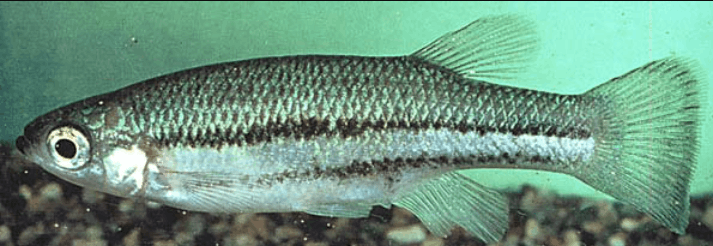

Systématique
- Ordre : Cyprinodontiformes
- Famille : Goodeidae
- Genre : Ataeniobius
- Espèce : A. toweri
- Auteur : (Meek, 1904)

Ataeniobius toweri est une espèce unique et monotypique au sein de la famille des Goodeidae. Originaire du Mexique, elle représente une lignée basale et primitive des Goodeinae. Elle se distingue de tous les autres membres de sa sous-famille par une caractéristique embryologique majeure : l'absence totale de trophotaeniae (structures d'échange nutritionnel externes) chez les embryons, d'où son nom de genre Ataeniobius ("sans ruban").
Le corps est allongé et peut atteindre 7 à 9 cm pour les femelles, les mâles restant légèrement plus petits (environ 6 cm). La coloration de base est gris-olive à brune avec une ligne latérale sombre souvent marquée. Les mâles développent des reflets bleu métallique intenses sur la partie postérieure du corps et sur la nageoire caudale, ce qui leur vaut parfois leur surnom descriptif dans la littérature anglophone.
Cette espèce est classée "En danger" par l'UICN. Sa survie dépend exclusivement de la préservation du système de sources de Rio Verde. Elle est sensible à la pollution et à la compétition avec des espèces introduites.
Dans la nature, Ataeniobius toweri occupe principalement les eaux claires des sources et des canaux. C'est un poisson actif qui nage en pleine eau ou à proximité de la végétation dense. Contrairement à d'autres Goodeidae qui peuvent être territoriaux, cette espèce est relativement paisible et peut être maintenue en groupe, bien que des escarmouches mineures entre mâles puissent survenir sans gravité.
Il apprécie les zones riches en plantes aquatiques et en algues, qui constituent une part importante de son environnement et de son régime. Il n'est pas particulièrement timide une fois acclimaté et s'avère être un nageur robuste.
Mode : Vivipare (Lécitotrophe).
La reproduction d'Ataeniobius toweri est unique chez les Goodeinae. Bien que la fertilisation soit interne grâce à l'andropodium du mâle, le développement des embryons est de type lécitotrophe : les petits se développent principalement à partir des réserves de jaune de l'œuf (vitellus) plutôt que par transfert nutritif maternel direct durant la gestation. L'absence de trophotaeniae rend cette espèce particulièrement intéressante pour l'étude de l'évolution de la viviparité.
La gestation dure entre 40 et 50 jours. Les portées sont généralement plus nombreuses que chez les autres goodeidés de taille similaire, pouvant aller de 20 à plus de 50 alevins. Les nouveau-nés sont déjà de grande taille et capables de se nourrir de micro-organismes et de nourriture fine dès la naissance.
Dimorphisme sexuel : Les mâles sont plus petits, plus sveltes et possèdent un andropodium (nageoire anale modifiée avec une encoche). Ils arborent des couleurs bleutées beaucoup plus vives sur les nageoires et le pédoncule caudal. Les femelles sont plus massives, avec un ventre rebondi à maturité, et présentent des couleurs plus ternes.
Espérance de vie : 3 à 5 ans dans de bonnes conditions de maintenance.
L'espèce est endémique du bassin du Rio Verde, dans l'État de San Luis Potosí, au Mexique, plus précisément dans le complexe de sources de la Media Luna. C'est un environnement d'eaux thermales claires, dont la température reste constante tout au long de l'année.
Le substrat est souvent composé de sable, de graviers ou de roches calcaires. La végétation est luxuriante (Nymphaea, Ceratophyllum). L'eau est dure et alcaline, avec une visibilité exceptionnelle dans son milieu d'origine.
Répartition

Origine naturelle :
- Mexique : État de San Luis Potosí (Bassin du Rio Verde).
- Système de sources de la Media Luna et canaux associés.
- Endémique strict de cette zone géographique limitée.
Sa distribution est très fragmentée. L'espèce souffre de la pression touristique sur les sources de la Media Luna et de l'extraction de l'eau pour l'irrigation.
Paramètres de maintenance
Température : 22 à 26 °C. Étant issu de sources thermales, il supporte mal les variations brusques de température.
pH : 7,5 à 8,5 (eau alcaline).
GH : 15 à 30 °dGH (eau dure à très dure).
Courant : Faible à modéré.
Volume conseillé : Minimum 80–100 L pour un groupe, car c'est une espèce active qui a besoin d'espace de nage.
Régime alimentaire
Régime : Omnivore à forte composante végétale.
Il se nourrit d'algues, de détritus végétaux, mais aussi de petits invertébrés et de larves d'insectes. En aquarium, il accepte les flocons et granulés de qualité (riches en spiruline) complétés par des distributions de daphnies, artémias ou cyclops.
Un apport régulier en végétaux est indispensable pour maintenir l'espèce en bonne santé sur le long terme.